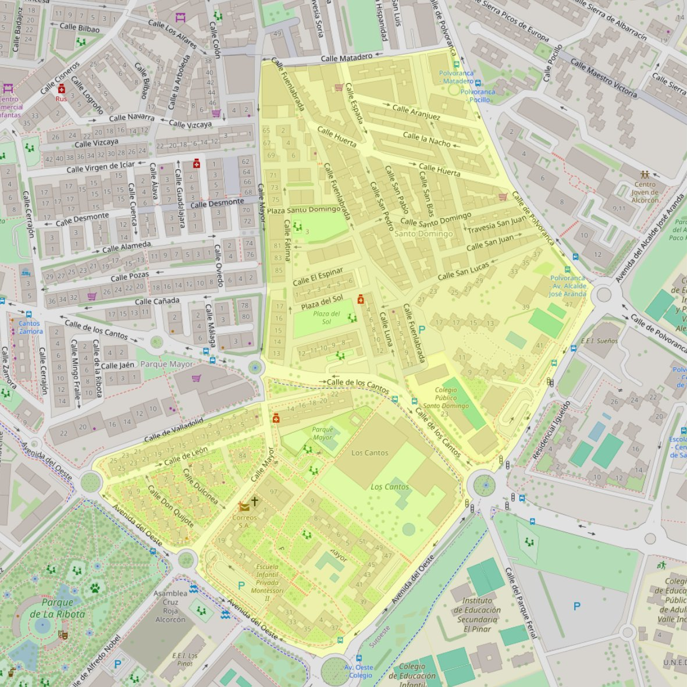

Virgen del Alba

- Arciprestazgo
- Alcorcón
- Población
- Alcorcón
- Dirección postal
- c/ Mayor, 97
- Código postal
- 28922
- Extensión
- 0,30 km² (30 ha)
- Teléfono
- 917 274 258
- Correo electrónico
- virgendelalba@gmail.com
Arciprestazgos y parroquias de la Diócesis de Getafe
